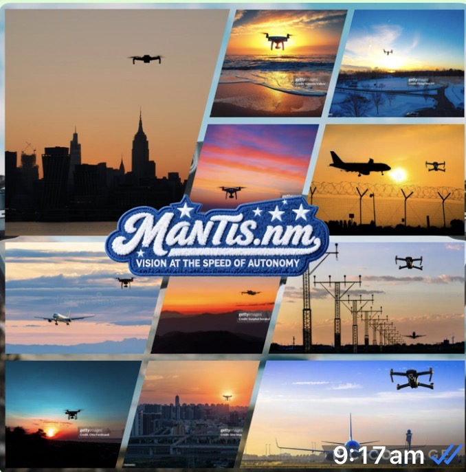

🌀
1. Propellers
Propellers spin and move air. Changing their speed helps a drone rise, fall and tilt.
Welcome, explorer! Discover drones, flight, science and clever ideas through mini lessons, missions and quizzes made for curious kids ages 7–12.
A drone uses spinning propellers to push air downward. That creates an upward force called lift. Sensors and a computer help it stay balanced and follow instructions.
Propellers spin and move air. Changing their speed helps a drone rise, fall and tilt.
Sensors can detect movement and orientation, helping the drone know how it is positioned.
A small computer processes information and controls the motors so the drone can react quickly.
Explore the typed-up Mantling project and see the PicCollage that inspired it.
Mantis is the high speed vision platform for AI, 100x faster than legacy vision, we deliver immediate detection and reply against drones and independent threats.
New drones and independent threats move faster than legacy vision systems can “see”. Mantis connects submillisecond vision with multi-sensor data and instant control to deliver base accuracy and omit response delay. From open spaces to transportation hubs and city centers, Mantis adapts to any environment combining the perfect sensors and instinct responses to neutralise threats before they harm public safety or critical infrastructure.

Meet the clever computer ideas behind modern technology. No coding required — just curiosity!
Computer vision helps computers analyze images and video to find useful patterns, objects or changes.
Machine learning lets a computer learn patterns from examples so it can make useful predictions or classifications.
AI systems can combine information from sensors with other data to help make sense of what is happening around them.
Imagine how drones, AI, sensors and people could work together to make the future more useful, creative and responsible.
Technology could help scientists observe habitats and notice environmental changes without disturbing wildlife.
Data and sensors could help communities understand traffic, infrastructure and public spaces.
Researchers can use technology to collect information about weather, land and other parts of Earth's environment.
Tap a mission to reveal your challenge. You can complete them in any order!
Experiment with the controls. This is a simple science model — not a real drone controller.
At medium altitude, your drone has room to move while staying easy to observe.
Ready? See how much you know — and learn something new if you miss one!
Learn the words that help you understand drones and technology.
An upward force that can help an aircraft or drone rise.
A spinning blade that pushes air to help a drone move.
A device that detects information such as movement, distance or position.
The ability of a system to perform some tasks with less direct human control.
A satellite-based system that can help a drone determine its location.
The part that stores electrical energy to power the drone.
How high something is above a chosen reference point.
Planning and controlling a route from one place to another.
Something a drone carries, such as a camera or scientific equipment.
A quick guide for helping children explore drones, science and technology thoughtfully.
Children explore forces, sensors, computing, navigation, problem-solving and responsible technology use through short activities.
Try questions like: “What problem could a drone solve?” “What information should it collect?” and “How can technology be used responsibly?”
This website is a learning simulator, not a flight guide. For real drones, children should follow local laws and rules and have appropriate adult supervision.
Pick one real-world problem — such as checking a hard-to-reach place or studying nature — and brainstorm a drone-based solution. Then ask: What are the benefits? What could go wrong? How could we make the idea safer and more helpful?
Complete activities around the site to unlock colorful badges. Your progress is saved on this device.
Every great project starts with a question, an idea and people who want to build something useful.
The original Mantis.nm website was created by the creator's dad. It inspired the technology and vision that Mantis.nm KIDS brings to a younger audience.
Big idea: Build technology that helps people see, understand and respond to the world around them.
Mantling was shaped to make big technology ideas more approachable, colorful and fun for kids ages 7–12.
Creator mission: Make learning feel like an adventure — with missions, badges, experiments and room for kids to think independently.
Mantling is a place to explore, ask questions, invent and share ideas.
Pick a problem you care about. Learn about it, ask questions, test an idea and improve it. You don't have to get everything right on the first try.
Creator challenge: What would you invent if you could combine a drone, AI and one amazing sensor?